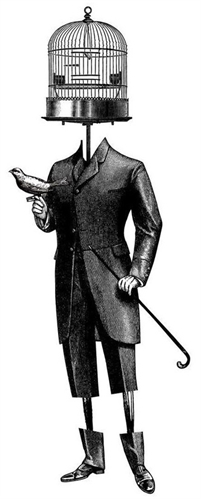

IDEAL-isthme
"Idéal : modèle qu’on se compose, en vue de l’admirer et de l’imiter. L’idéal est toujours nettoyé d’un peu de réalité qui ferait tache." Alain

Sinon de l'usiter, vous êtes vraissemblablement familier avec cette forme langagière populaire "dans l'idéal, ce serait...". Un idéal, cet idéal couramment exprimé est un principe moral qu'une personne poursuit activement comme objectif (de vie) et qui se tient au-dessus d'autres préoccupations perçues comme étant moins significatives. L'idéal est ce que l'on se représente ou se propose comme type parfait ou modèle absolu. Mais c'est avant tout, une représentation chimérique, qui est conçue et interprétée dans l'esprit comme une réalité psychique de premier ordre. C'est ce que nous souhaitons atteindre et qui nous donnerait entière satisfaction. L'idéal intègre ainsi le désir et est la source de nos valeurs, comme une solution à la frustration existancielle. Dans un sens plus restreint, il est quelquefois simplement synonyme de modèle.
S'en décline l’idéalisation qui est un bel exemple de compromis entre les aspirations, les pulsions inconscientes, et qui ne cesse de réinventer la compréhension du monde afin de le conformer au désir, c’est-à-dire, à se débrouiller avec le fait que l’environnement est rarement conforme à nos attentes. L'idéalisation serait alors une défense psychique, afin de pouvoir accepter le monde et de pouvoir y vivre. Ainsi, l'idéalisation peut être considérée comme un filtre de lecture, seulement elle déforme la perception que dans un sens unique, celui du fantasme, renforcé par les croyances et entraine bien souvent de la déception. De l'idéalisation découle l'idéologie qui est un système de pensée.
Beauté, vérité, amour, équité, famille, fidélité, loyauté, etc., les idéaux tels des étoiles, font pourtant partie de ces éléments inaccessibles qu’on hésite à regarder en face : ils nous fascinent, mais ils nous éblouissent aussi, au risque de nous aveugler. Et pour les contempler, nous n’avons pas d’instruments sophistiqués analogues à ceux qu’utilisent les astronomes. Pourtant, ces étoiles-là exercent un vrai pouvoir sur notre vie psychique jusqu'à influencer nos choix, avec conséquence !
Certes, comme une étoile, l'idéal indique une direction, une marche à suivre et en même temps, c’est une force car il est doté d’une énergie sans pareille. En un mot, c’est un gouvernail qui serait aussi un moteur. Dans le domaine naturel, le vent possède ces deux vertus à la fois, il indique une direction et il y pousse.
L’idéal pose une autre question qui tient à sa nature propre : il se présente à nous comme un objet ascétique, tels le gouvernail ou l’étoile que je viens d’évoquer, et pourtant, cela reste une notion abstraite, fictive. L’idéal nous interroge aussi par son ambivalence constitutive. Il est considéré généralement comme une notion positive, constructive, alors qu’on sait pertinemment qu’il est en même temps la source de bien des maux parmi les plus désastreux.
A contrario, la désidéalisation, c'est l'échec à répétition, l'inaccesion, la déception, la trahison ou encore le fatalisme du quotidien, vous savez, ce fatalisme qui dit, par exemple, que le monde actuel est invivable. Invivable car le "désillusionnant" ne veut pas le vivre, le réfute car restant trop attaché à son idéalisation fantasmatique d'un monde "parfait" qui est en inadéquation avec sa compréhension du monde réel. Cela peut aller jusqu'à une forme de cécité ou de déni et perdre la notion du temps présent avec ce qu'il offre. Il s'efforce alors, par le biais du filtre de ses croyances et valeurs, d'entretenir l'abyssalité du concret et du mesurable face à sa fantasmagorie. Ici peut émerger le symptôme !
On n’imagine pas le nombre de personnes qui souffrent de leurs idéaux. Et il est difficile de les alerter, car elles sont persuadées que ce sont des valeurs, qu'elles représentent ce qu’il y a de plus respectable. S’il n’est pas question bien sûr d’en nier la richesse, rien ne nous empêche d’adopter à l’égard des idéaux une attitude critique, analytique. C’est indispensable si l’on veut se libérer de leurs excès et en vivre sans tomber sous leur dépendance.
S'en décline l’idéalisation qui est un bel exemple de compromis entre les aspirations, les pulsions inconscientes, et qui ne cesse de réinventer la compréhension du monde afin de le conformer au désir, c’est-à-dire, à se débrouiller avec le fait que l’environnement est rarement conforme à nos attentes. L'idéalisation serait alors une défense psychique, afin de pouvoir accepter le monde et de pouvoir y vivre. Ainsi, l'idéalisation peut être considérée comme un filtre de lecture, seulement elle déforme la perception que dans un sens unique, celui du fantasme, renforcé par les croyances et entraine bien souvent de la déception. De l'idéalisation découle l'idéologie qui est un système de pensée.
Beauté, vérité, amour, équité, famille, fidélité, loyauté, etc., les idéaux tels des étoiles, font pourtant partie de ces éléments inaccessibles qu’on hésite à regarder en face : ils nous fascinent, mais ils nous éblouissent aussi, au risque de nous aveugler. Et pour les contempler, nous n’avons pas d’instruments sophistiqués analogues à ceux qu’utilisent les astronomes. Pourtant, ces étoiles-là exercent un vrai pouvoir sur notre vie psychique jusqu'à influencer nos choix, avec conséquence !
Certes, comme une étoile, l'idéal indique une direction, une marche à suivre et en même temps, c’est une force car il est doté d’une énergie sans pareille. En un mot, c’est un gouvernail qui serait aussi un moteur. Dans le domaine naturel, le vent possède ces deux vertus à la fois, il indique une direction et il y pousse.
L’idéal pose une autre question qui tient à sa nature propre : il se présente à nous comme un objet ascétique, tels le gouvernail ou l’étoile que je viens d’évoquer, et pourtant, cela reste une notion abstraite, fictive. L’idéal nous interroge aussi par son ambivalence constitutive. Il est considéré généralement comme une notion positive, constructive, alors qu’on sait pertinemment qu’il est en même temps la source de bien des maux parmi les plus désastreux.
A contrario, la désidéalisation, c'est l'échec à répétition, l'inaccesion, la déception, la trahison ou encore le fatalisme du quotidien, vous savez, ce fatalisme qui dit, par exemple, que le monde actuel est invivable. Invivable car le "désillusionnant" ne veut pas le vivre, le réfute car restant trop attaché à son idéalisation fantasmatique d'un monde "parfait" qui est en inadéquation avec sa compréhension du monde réel. Cela peut aller jusqu'à une forme de cécité ou de déni et perdre la notion du temps présent avec ce qu'il offre. Il s'efforce alors, par le biais du filtre de ses croyances et valeurs, d'entretenir l'abyssalité du concret et du mesurable face à sa fantasmagorie. Ici peut émerger le symptôme !
On n’imagine pas le nombre de personnes qui souffrent de leurs idéaux. Et il est difficile de les alerter, car elles sont persuadées que ce sont des valeurs, qu'elles représentent ce qu’il y a de plus respectable. S’il n’est pas question bien sûr d’en nier la richesse, rien ne nous empêche d’adopter à l’égard des idéaux une attitude critique, analytique. C’est indispensable si l’on veut se libérer de leurs excès et en vivre sans tomber sous leur dépendance.
Aussi la première tâche sera-t-elle de rejoindre l’idéal dans ses fondements inconscients pour opérer à partir de là, les distinctions qui s’imposent. L’idéal est avant tout une donnée intime et personnelle, et c’est en ce sens qu’il faut la comprendre. Et malgré son utopie, il ne tombe pas du ciel, ce n’est pas non plus le simple fruit d’un enseignement, d’une quête spirituelle. L’idéal fait partie intégrante du psychisme humain inconscient où il joue un rôle déterminant, souvent à notre insu ; c’est là qu’il faut l'entendre si l’on veut pouvoir utiliser son action intérieure dans ses bénéfices.
En même temps, l’idéal pose un problème car s’il représente ce qu’il y a de plus grand chez l’homme, il est aussi ce qu’il y a de plus violent et de plus freinant voire dangereux. Il sectorise, isole, cloisonne, et ne laisse que peu de chance aux alternatives car l'idéal, par définition est inaccessible. Et quand l'idéal se transforme en action la nocivité opère car on peut tuer et massacrer au nom de l’idéal mais on peut accomplir aussi des choses merveilleuses en son nom et chacun mesure aisément qu’il joue un rôle décisif dans sa destinée, surtout aux moments de crise.
Tout sujet humain doit un jour ou l’autre se retourner sur l’idéal qu’il invoque, croyant ou pas, et le regarder en face. Non pas d’une manière superficielle, en se contentant de le décliner sur tous les tons pour en célébrer la grandeur, mais en le poussant dans ses retranchements, en le dégageant de toutes ses modalités, en le mettant en pièces à son tour pour qu’il révèle ce dont il est porteur.
Nul ne peut se passer d’idéal : chassé, il revient au galop, et pas de la meilleure façon. Il faut aller jusqu’aux tréfonds dont il est issu pour le regarder sous toutes ses faces, en surmontant autant que faire se peut l’aveuglement qu’il suscite. Par un paradoxe étonnant en effet, on considère l’idéal comme une lumière sur notre route, on y voit l’étoile de notre vie psychique si souvent plongée dans l’obscurité, alors qu’il est aussi une source d’aveuglement inévitable, à la manière de ces lampes qui éclairent le chemin au point d’éblouir celui qui les porte en faussant sa vision.
Et vous n'êtes pas passé à coté du jeu de mot du titre de cette page : un isthme est une étroite bande de terre, entre deux mers ou deux golfes, qui réunit deux grandes étendues. Imaginez alors un isthme psychique qui puisse ponter l'idéal au réel. Par cet isthme, les informations s'échangent, sans altération aucune, et ainsi, stabilisent les névrose du quotidien.
Ca serait l'idéal !
En même temps, l’idéal pose un problème car s’il représente ce qu’il y a de plus grand chez l’homme, il est aussi ce qu’il y a de plus violent et de plus freinant voire dangereux. Il sectorise, isole, cloisonne, et ne laisse que peu de chance aux alternatives car l'idéal, par définition est inaccessible. Et quand l'idéal se transforme en action la nocivité opère car on peut tuer et massacrer au nom de l’idéal mais on peut accomplir aussi des choses merveilleuses en son nom et chacun mesure aisément qu’il joue un rôle décisif dans sa destinée, surtout aux moments de crise.
Tout sujet humain doit un jour ou l’autre se retourner sur l’idéal qu’il invoque, croyant ou pas, et le regarder en face. Non pas d’une manière superficielle, en se contentant de le décliner sur tous les tons pour en célébrer la grandeur, mais en le poussant dans ses retranchements, en le dégageant de toutes ses modalités, en le mettant en pièces à son tour pour qu’il révèle ce dont il est porteur.
Nul ne peut se passer d’idéal : chassé, il revient au galop, et pas de la meilleure façon. Il faut aller jusqu’aux tréfonds dont il est issu pour le regarder sous toutes ses faces, en surmontant autant que faire se peut l’aveuglement qu’il suscite. Par un paradoxe étonnant en effet, on considère l’idéal comme une lumière sur notre route, on y voit l’étoile de notre vie psychique si souvent plongée dans l’obscurité, alors qu’il est aussi une source d’aveuglement inévitable, à la manière de ces lampes qui éclairent le chemin au point d’éblouir celui qui les porte en faussant sa vision.
Et vous n'êtes pas passé à coté du jeu de mot du titre de cette page : un isthme est une étroite bande de terre, entre deux mers ou deux golfes, qui réunit deux grandes étendues. Imaginez alors un isthme psychique qui puisse ponter l'idéal au réel. Par cet isthme, les informations s'échangent, sans altération aucune, et ainsi, stabilisent les névrose du quotidien.
Ca serait l'idéal !
EN RELATION

OSER
CAP
PEUR

PHANTASME
ATARAXIE
(bonheur)
FRUSTRATION
CROYANCE